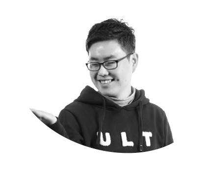

정유권
윤디자인 그룹장
부산광역시 영도구 서체를 활용한 서울디자인페스티벌
서울특별시 강동구 통합도서관 브랜드 및 서체 개발
충청남도 부여군 브랜드 서체 iF 수상연계 홍보용역
강원특별자치도 영월군 영월체 제작 용역
서울특별시 금천구 브랜드 G밸리산스 서체 용역
BUSAN HANDWRITING AWARDS
손글씨 문구와 시청자가 전하는 이야기(나만의 부산 이야기)를 함께 담아주세요.
이번 부산 손글씨 대회는 도시 슬로건 ‘Busan is Good(부산이라 좋다)’를 주제로 진행됩니다. 참여 방법은 아주 간단합니다. 신청서 문구 중 하나를 택해서 직접 손글씨로 작성해 출품해 주세요.
부산에서 느낀 매력과 따뜻한 정서를 글자 속에 자유롭게 담아주시면 됩니다. 글씨체나 표현 방식에는 제한이 없으며, 개성과 진심이 담긴 손글씨라면 어떤 모습이든 환영합니다.
ex) 어릴 적 친구들과 광안리 바다에 나가면, 모래사장 위에 손가락으로 글씨를 쓰곤 했습니다. ‘우리 동네’, ‘바다 최고’ 같은 말들을 장난스럽게 적다가 파도가 밀려와 지워버리면, 그마저도 하나의 놀이가 되었지요. 지금은 그 글씨들이 어디에도 남아 있지 않지만, 그때의 웃음과 바다 내음은 제 마음속에 손글씨처럼 또렷하게 새겨져 있습니다.
부산 손글씨 대회는 세대를 아우르는 부산 시민 모두가 함께하는 글쓰기의 장입니다.손글씨는 단순한 기록을 넘어 쓰는 이의 삶과 감정을 담아내며 세대와 시대를 잇는 따뜻한 매개가 됩니다. 좋은 손글씨는 글자의 형태와 내용이 조화를 이루어 보는 이에게 진솔한 울림을 전합니다.이번 대회를 통해 완성된 작품들이 저마다의 부산 이야기를 드러내며, 서로의 기억과 경험을 더욱 빛나게 하길 바랍니다.
* 상기 일정은 주최 측 사정에 따라 변동될 수 있습니다.
부산광역시 영도구 서체를 활용한 서울디자인페스티벌
서울특별시 강동구 통합도서관 브랜드 및 서체 개발
충청남도 부여군 브랜드 서체 iF 수상연계 홍보용역
강원특별자치도 영월군 영월체 제작 용역
서울특별시 금천구 브랜드 G밸리산스 서체 용역
홍익대학교 산업미술대학원 서비스디자인 석사 수료
삼성전자 모바일 폰트 개발 및 유지보수
삼성전자 TV OS Default 폰트 개발 및 유지보수
현대자동차 제네시스 내장 인테리어용 서체 개발
LG Display 다국어 및 딩벳 폰트 개발
조선일보 100주년 기념서체 개발
국민대학교 디자인대학원 시각디자인학과 석사 졸업
서울시 전용서체 개발
신한금융그룹 원신한디지털체 총괄
한국장애인개발원 UD고딕 개발 총괄
TEDx SNU 24회 강연 연사
DOTA2 전용서체 개발